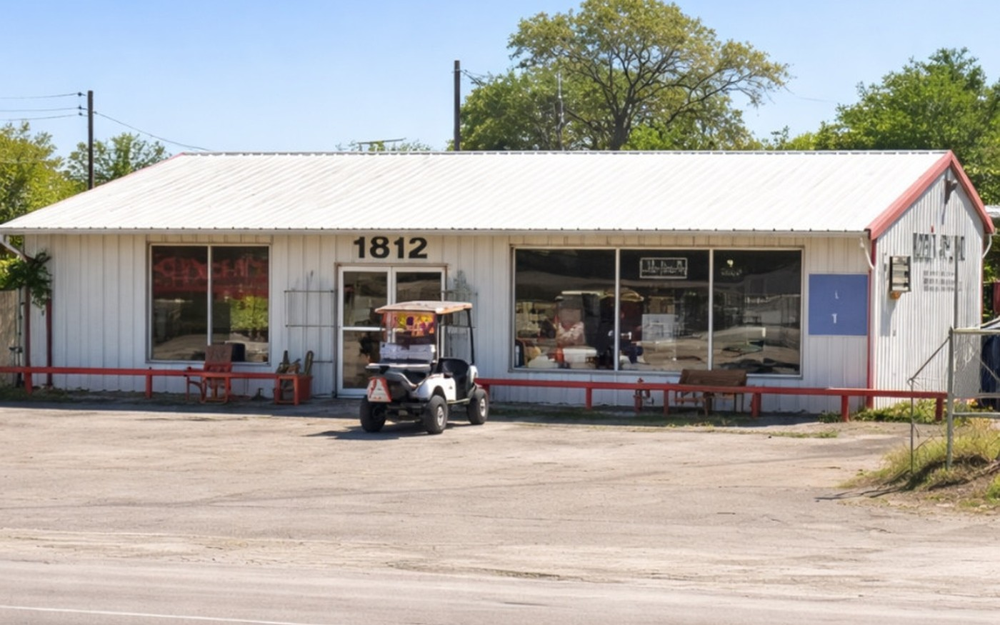
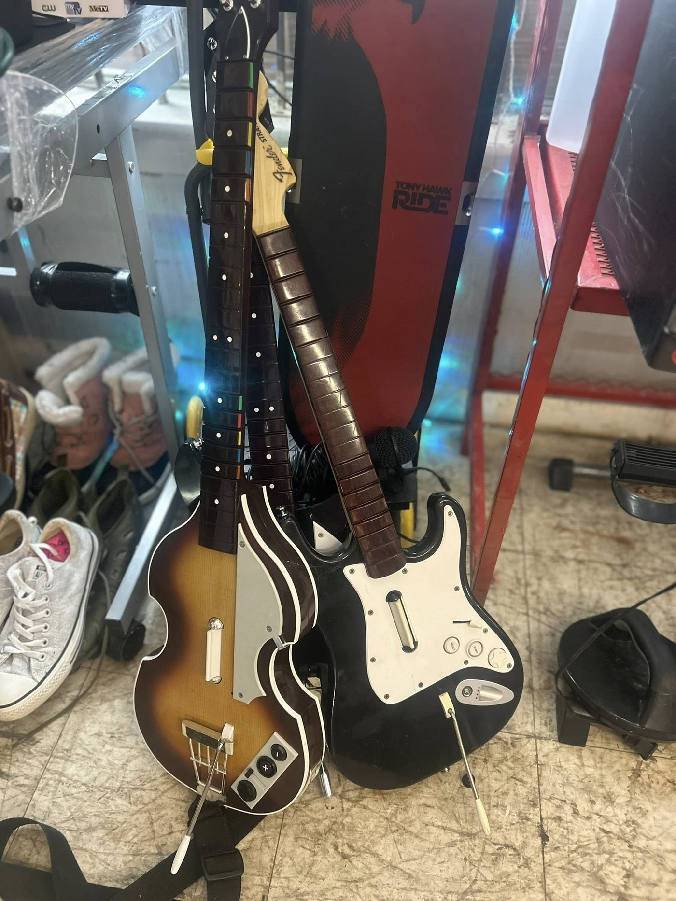
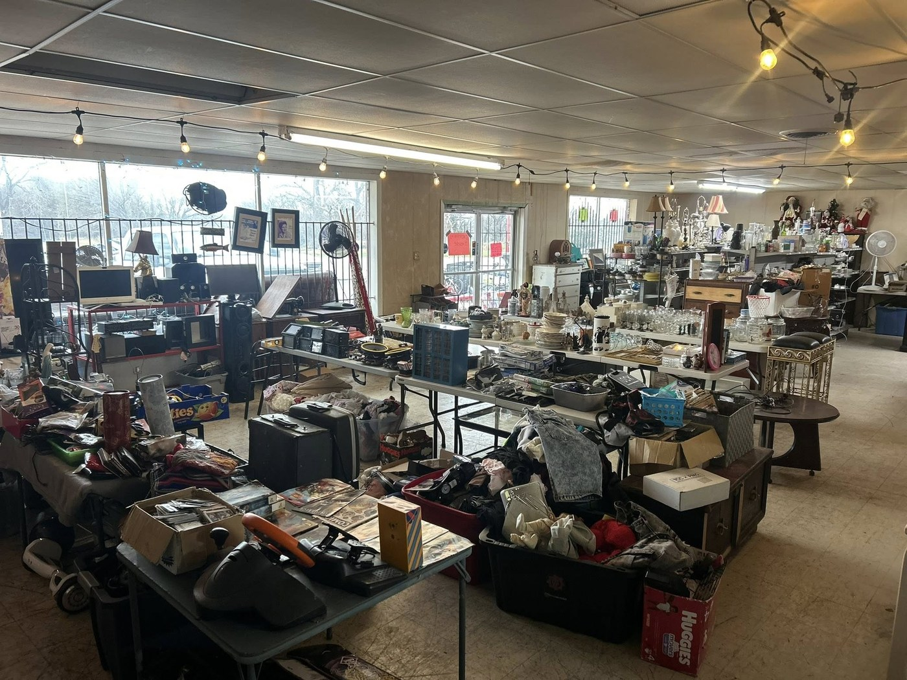

Fresh finds
Something new to check out
Collectibles, books, décor, media, and one-off pieces keep the store from ever feeling stale.
Weatherford Local Resale & Thrift is the kind of shop where you can walk in for one thing and leave with a handful of great finds. From home pieces and collectibles to practical everyday resale, inventory moves fast and the mix stays interesting.

That’s the whole point. The inventory rotates, the selection changes, and the best stuff doesn’t sit around long.
The vibe is simple: practical prices, interesting inventory, and a store that actually feels worth walking through.
Collectibles, books, décor, media, and one-off pieces keep the store from ever feeling stale.

The best resale shops are the ones where you keep spotting another cool thing. This one has that feel.

From home items and everyday resale to games, vintage pieces, hobby gear, and fun surprises, the mix stays broad.
Weatherford Local Resale & Thrift has the kind of inventory variety that gives shoppers a reason to come back often. Some people stop in for furniture or home items. Others come for collectibles, vintage media, small treasures, or whatever happens to be priced right that day.

Inventory changes fast, so the main advantage is simple: every visit can feel different.
Tables, décor, housewares, shelving, seating, and useful items that help a place feel more put together.
Display pieces, vintage items, sports cards, unique finds, and small treasures you don’t expect to see twice.
Books, CDs, DVDs, game gear, toys, and nostalgic items that make people stop and take a second look.
A good resale shop mixes surprise finds with practical things people actually use, and that’s a big part of the appeal here.
Rows of rotating inventory, useful pieces, and enough variety to make stopping in feel worth it.

There is a little bit of everything, including bigger pieces and surprise outdoor inventory.

Conveniently located on Fort Worth Hwy in Weatherford.
Small finds, display-worthy pieces, and those random items people love discovering.
The kind of shop where you keep scanning because something else always catches your eye.
The best contact method is Facebook Messenger. It is the fastest way to ask about an item, check hours, or get ready to stop by.